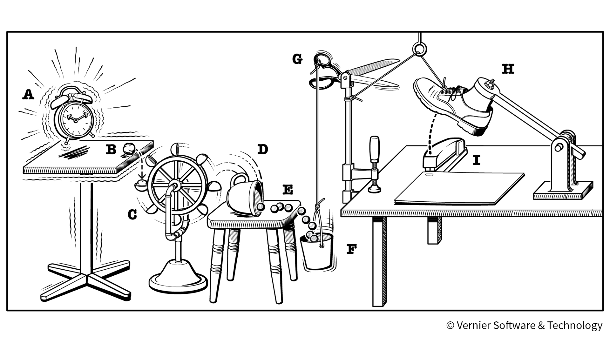

Week 2
We started off this week by doing a warmup challenge where we each had a half pipe in hand and the objective was to get the marble through the pipes all the way into the bucket at the end. This was assigned to two groups half the class. This was very difficult, as we had to use teamwork in order to transport the pipes to the next team member. Next we had to design a tinkercad home appliance. We also worked on a group project.
Week 3
This week, we started off on Monday by doing a challenge with the class split up into two sides. The objective was that we had to lign up and we each had one pipe that we had to pass one marble through. This had to continue all the way until the marble went into the bucket at the end of the line. This was a very fun experience that had to use the combined creativity of your group.
On Wednesday, we started to design our Rube Goldberg Machines. This was first supposed to be drawn on paper and then put together in tinkercad when finished.
Finally, on Friday, we were supposed to bring an item from home to the class. Then we were supposed to design said item on tinkercad in which two judges picked their sides winner. The winner got a kit kat bar. I designed the eiffil tower, which is a very complicated piece to make with shapes as it is curved and has many different designs. At the end, Brandon won our sides contest with a design of a nintendo switch.

Week 4
On week 4, we started off by taking our Rube Goldberg projects from tinkercad and starting to design it. For our tools we got a large piece of cardboard. We also were able to use a ruler. This was all that was provided though. This was very difficult as we got off to a slow start because we did not know how to make the object 3D, but after we figured it out we actually got a small amount of work done. On Wednesday, we got box cutters in order to trace the designs that we were going to make and cut them out on the cardboard that we were given. This was a very hard process where I was working on the ground trying to cut the pieces as straight as possible. At the end we were able to almost finish taping everything together. On Friday, we had a challenge day. Our objective was to make a boat that would hold weight on it for 5 minutes. Our groups lasted the whole 5 minutes but only used minimal weight. The way to get the longest amount of time was to spread the base as big as possible.
Week 5
This whole week was dedicated as a work week. We starteed off on Monday by making very little progress on our project. We ran into a lot of trial and error during this portion as we needed to figure out how we were going to make the pully system functional. On Wednesday, it was an assembly sceduale and as the internet had failed the first time about 30 minutes into class, we only had a limited amount of time to work on our project. We got some stuff taped down including our lever mechanism and our pully system. Finally, on Friday we finished off whatever we had left on this project and tested it. The first time, the needle had hit the balloon but did not pop it. The second time though, it was a success, our project worked and our balloon popped. The following is a video showing our successful attempt: